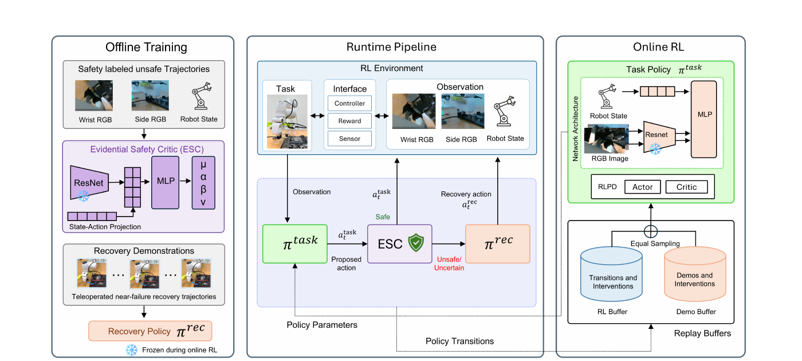
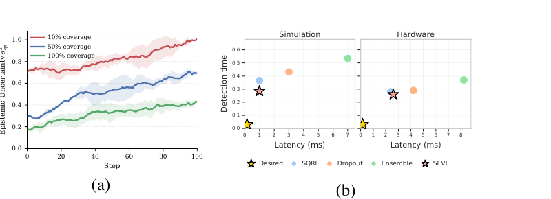
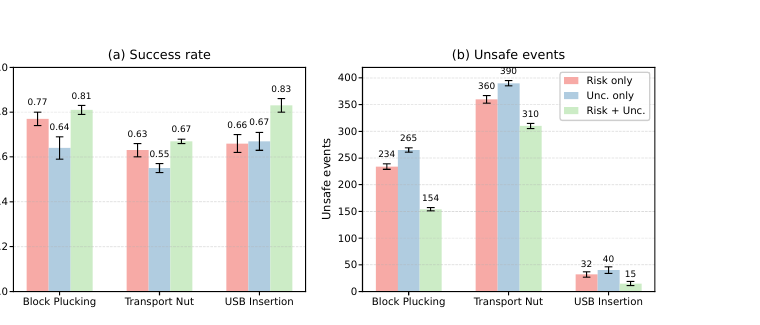
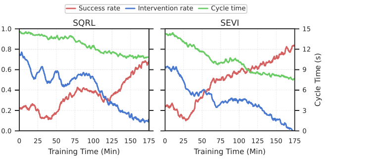

Hit-and-Recover
The task action enters a risky region, recovery is triggered, and the robot moves back toward a safer configuration before task execution resumes.
Indiana University Bloomington
IEEE Robotics and Automation Letters (RA-L), 2026
Real-world reinforcement learning has enabled contact-rich manipulation tasks to be trained directly on physical robots, but unsafe interactions during online learning remain a key barrier to practical deployment. We propose Safe Evidential Real-World Reinforcement Learning (SEVI), a framework for reliability-aware safety intervention during real-world policy learning. SEVI introduces an Evidential Safety Critic (ESC) that estimates both future constraint-violation risk and epistemic uncertainty in a single forward pass. During online learning, SEVI evaluates each task-policy action before execution; if the action is predicted to be unsafe or the prediction is insufficiently supported by evidence, SEVI overrides it with an offline-trained recovery policy that guides the robot toward a lower-risk region.
We evaluate SEVI on two simulated manipulation tasks and a real-world USB insertion task under in-distribution and distribution-shifted conditions. Across task-learning and safety-critic baselines, SEVI achieves the strongest trajectory-level safety prediction, the highest final task success, and the lowest unsafe-event counts while preserving low-latency execution-time filtering.
The safety gate uses predicted risk and epistemic uncertainty to decide when the task action should be replaced by recovery. Below are two qualitatively different recovery behaviors used in our USB insertion experiments.
The task action enters a risky region, recovery is triggered, and the robot moves back toward a safer configuration before task execution resumes.
A distinct recovery response is used when the task becomes stuck near a failure boundary, testing whether uncertainty-aware gating is robust to the recovery behavior.
SEVI decouples task learning from execution-time safety intervention. Offline data train the Evidential Safety Critic and recovery policy; online, the task policy continues learning with standard off-policy RL while the safety layer only changes the action that is actually executed.

Proposes the action that optimizes the original manipulation objective using sample-efficient off-policy RL.
Predicts future violation risk and epistemic uncertainty in one forward pass, providing both a safety estimate and a measure of its reliability.
Overrides the task action when risk or uncertainty exceeds its threshold and guides the robot toward a lower-risk region.
The evidential critic should become more certain where it has more training support, while remaining cautious in poorly supported regions. SEVI uses this reliability signal together with predicted risk for recovery gating.


On the real-world USB insertion task, SEVI improves task success while intervention rate and cycle time decrease as the policy learns. Closed-loop evaluation measures the final task policy separately from the safety cost accumulated during online training.

SEVI achieves the highest final success rate and the lowest unsafe-event count on Block Plucking, Transport Nut, and real-world USB Insertion.
| Method | Block Plucking | Transport Nut | USB Insertion | |||
|---|---|---|---|---|---|---|
| Success ↑ | Unsafe ↓ | Success ↑ | Unsafe ↓ | Success ↑ | Unsafe ↓ | |
| SERL | 0.67 | 270 | 0.52 | 450 | 0.71 | 56 |
| SAC | 0.63 | 298 | 0.49 | 467 | 0.61 | 49 |
| SAC-C | 0.71 | 281 | 0.55 | 410 | 0.70 | 37 |
| SQRL | 0.75 | 220 | 0.61 | 358 | 0.68 | 35 |
| SEVI w/o Uncertainty | 0.77 | 234 | 0.63 | 360 | 0.66 | 32 |
| SEVI | 0.81 | 154 | 0.67 | 310 | 0.83 | 15 |
Success is evaluated using the final policy; unsafe events are counted throughout training.
The benefit of uncertainty-aware gating is not tied to one particular recovery response. On USB Insertion, risk-plus-uncertainty gating improves success and reduces unsafe events for both recovery behaviors.
Full project video and additional recovery / data-coverage experiments.
@article{shithil2026sevi,
title = {SEVI: Safe Evidential Real-World Reinforcement Learning},
author = {Shithil, Shaekh Mohammad and Liu, Lantao},
journal = {IEEE Robotics and Automation Letters},
year = {2026}
}Volume, issue, pages, and DOI can be added here once the final IEEE record is available.